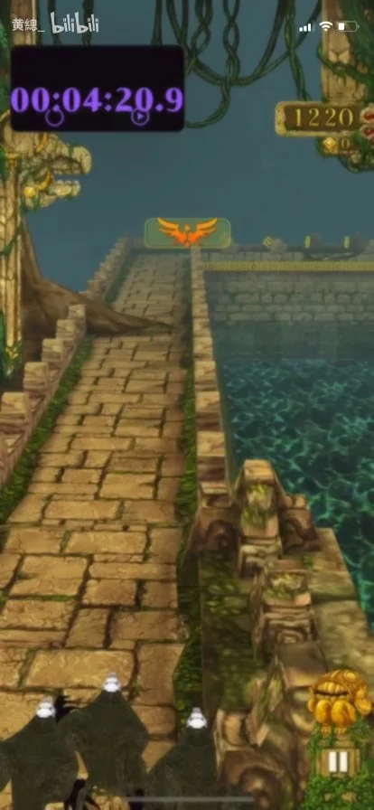

<!doctype html><html lang="zh-CN"><meta charset="utf-8"><meta name="viewport" content="width=device-width,initial-scale=1"><title>逐秒帧附录 · 玩法架构证据图</title><style>body{margin:auto;max-width:1200px;padding:20px;background:#112025;color:#f0e8cc;font:16px system-ui}a{color:#f0c969}nav{display:flex;flex-wrap:wrap;gap:12px;margin:18px 0}main{display:grid;grid-template-columns:repeat(auto-fit,minmax(180px,1fr));gap:18px}figure{margin:0;background:#203337;padding:10px;border-radius:8px}img{display:block;width:100%;height:auto}figcaption{min-height:60px;padding:8px 0}a[aria-current]{font-weight:bold;color:white}</style><header><h1>逐秒帧附录</h1><a href="../../design-evidence/">返回玩法架构证据图（结论与来源）</a><p>BV1ypuKzPErT · 0–270秒，每秒一帧，共271帧。每页18帧，图片懒加载；点击查看完整尺寸。WebP为有损发布副本，原始JPEG保留在仓库docs。</p><a href="https://www.bilibili.com/video/BV1ypuKzPErT/">原视频</a> · <a href="../../">返回游戏</a></header><nav aria-label="分页"><a href="frames.html">1</a><a href="page-2.html">2</a><a href="page-3.html">3</a><a href="page-4.html">4</a><a href="page-5.html">5</a><a href="page-6.html">6</a><a href="page-7.html">7</a><a href="page-8.html">8</a><a href="page-9.html">9</a><a href="page-10.html">10</a><a href="page-11.html">11</a><a href="page-12.html">12</a><a href="page-13.html">13</a><a href="page-14.html">14</a><a href="page-15.html">15</a><a href="page-16.html" aria-current="page">16</a></nav><main><figure id="f270"><a href="270.webp" target="_blank"></a><figcaption>270s · 结尾 / 重开<br></figcaption></figure></main><nav aria-label="分页"><a href="frames.html">1</a><a href="page-2.html">2</a><a href="page-3.html">3</a><a href="page-4.html">4</a><a href="page-5.html">5</a><a href="page-6.html">6</a><a href="page-7.html">7</a><a href="page-8.html">8</a><a href="page-9.html">9</a><a href="page-10.html">10</a><a href="page-11.html">11</a><a href="page-12.html">12</a><a href="page-13.html">13</a><a href="page-14.html">14</a><a href="page-15.html">15</a><a href="page-16.html" aria-current="page">16</a></nav></html>